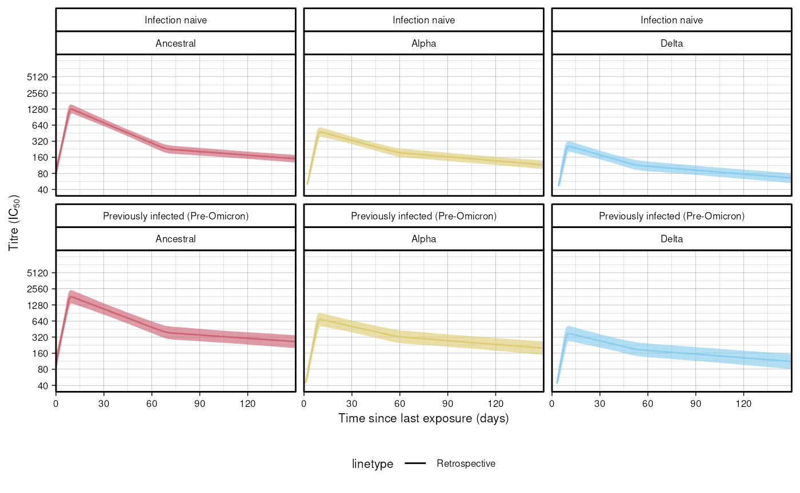
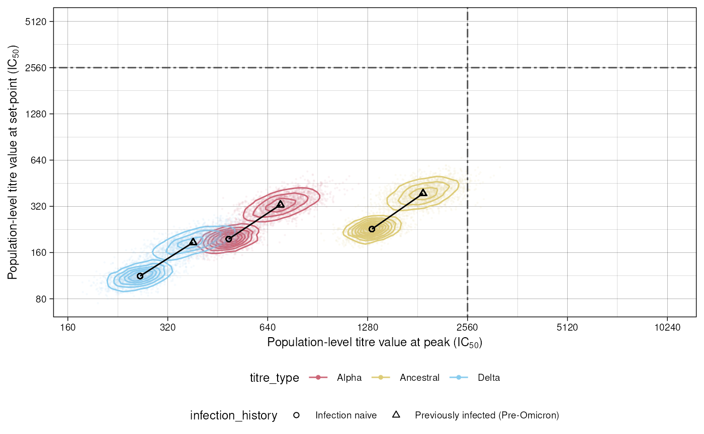

scova.RmdFirst run the model for each wave separately, using the data files installed with this package. Here we run it just for the Delta wave:
dat <- data.table::fread(system.file("delta_full.rds", package = "epikinetics"))
mod <- epikinetics::scova$new(data = dat)
#> CmdStan path set to: /home/runner/.cmdstan/cmdstan-2.35.0
delta <- mod$fit()
#> Running MCMC with 4 sequential chains...
#>
#> Chain 1 Iteration: 1 / 2000 [ 0%] (Warmup)
#> Chain 1 Iteration: 100 / 2000 [ 5%] (Warmup)
#> Chain 1 Iteration: 200 / 2000 [ 10%] (Warmup)
#> Chain 1 Iteration: 300 / 2000 [ 15%] (Warmup)
#> Chain 1 Iteration: 400 / 2000 [ 20%] (Warmup)
#> Chain 1 Iteration: 500 / 2000 [ 25%] (Warmup)
#> Chain 1 Iteration: 600 / 2000 [ 30%] (Warmup)
#> Chain 1 Iteration: 700 / 2000 [ 35%] (Warmup)
#> Chain 1 Iteration: 800 / 2000 [ 40%] (Warmup)
#> Chain 1 Iteration: 900 / 2000 [ 45%] (Warmup)
#> Chain 1 Iteration: 1000 / 2000 [ 50%] (Warmup)
#> Chain 1 Iteration: 1001 / 2000 [ 50%] (Sampling)
#> Chain 1 Iteration: 1100 / 2000 [ 55%] (Sampling)
#> Chain 1 Iteration: 1200 / 2000 [ 60%] (Sampling)
#> Chain 1 Iteration: 1300 / 2000 [ 65%] (Sampling)
#> Chain 1 Iteration: 1400 / 2000 [ 70%] (Sampling)
#> Chain 1 Iteration: 1500 / 2000 [ 75%] (Sampling)
#> Chain 1 Iteration: 1600 / 2000 [ 80%] (Sampling)
#> Chain 1 Iteration: 1700 / 2000 [ 85%] (Sampling)
#> Chain 1 Iteration: 1800 / 2000 [ 90%] (Sampling)
#> Chain 1 Iteration: 1900 / 2000 [ 95%] (Sampling)
#> Chain 1 Iteration: 2000 / 2000 [100%] (Sampling)
#> Chain 1 finished in 214.1 seconds.
#> Chain 2 Iteration: 1 / 2000 [ 0%] (Warmup)
#> Chain 2 Informational Message: The current Metropolis proposal is about to be rejected because of the following issue:
#> Chain 2 Exception: normal_lpdf: Location parameter[4] is inf, but must be finite! (in '/tmp/RtmpqbaFyO/model-286d64448357.stan', line 149, column 2 to column 52)
#> Chain 2 If this warning occurs sporadically, such as for highly constrained variable types like covariance matrices, then the sampler is fine,
#> Chain 2 but if this warning occurs often then your model may be either severely ill-conditioned or misspecified.
#> Chain 2
#> Chain 2 Iteration: 100 / 2000 [ 5%] (Warmup)
#> Chain 2 Iteration: 200 / 2000 [ 10%] (Warmup)
#> Chain 2 Iteration: 300 / 2000 [ 15%] (Warmup)
#> Chain 2 Iteration: 400 / 2000 [ 20%] (Warmup)
#> Chain 2 Iteration: 500 / 2000 [ 25%] (Warmup)
#> Chain 2 Iteration: 600 / 2000 [ 30%] (Warmup)
#> Chain 2 Iteration: 700 / 2000 [ 35%] (Warmup)
#> Chain 2 Iteration: 800 / 2000 [ 40%] (Warmup)
#> Chain 2 Iteration: 900 / 2000 [ 45%] (Warmup)
#> Chain 2 Iteration: 1000 / 2000 [ 50%] (Warmup)
#> Chain 2 Iteration: 1001 / 2000 [ 50%] (Sampling)
#> Chain 2 Iteration: 1100 / 2000 [ 55%] (Sampling)
#> Chain 2 Iteration: 1200 / 2000 [ 60%] (Sampling)
#> Chain 2 Iteration: 1300 / 2000 [ 65%] (Sampling)
#> Chain 2 Iteration: 1400 / 2000 [ 70%] (Sampling)
#> Chain 2 Iteration: 1500 / 2000 [ 75%] (Sampling)
#> Chain 2 Iteration: 1600 / 2000 [ 80%] (Sampling)
#> Chain 2 Iteration: 1700 / 2000 [ 85%] (Sampling)
#> Chain 2 Iteration: 1800 / 2000 [ 90%] (Sampling)
#> Chain 2 Iteration: 1900 / 2000 [ 95%] (Sampling)
#> Chain 2 Iteration: 2000 / 2000 [100%] (Sampling)
#> Chain 2 finished in 232.2 seconds.
#> Chain 3 Iteration: 1 / 2000 [ 0%] (Warmup)
#> Chain 3 Informational Message: The current Metropolis proposal is about to be rejected because of the following issue:
#> Chain 3 Exception: normal_lpdf: Location parameter[5] is inf, but must be finite! (in '/tmp/RtmpqbaFyO/model-286d64448357.stan', line 149, column 2 to column 52)
#> Chain 3 If this warning occurs sporadically, such as for highly constrained variable types like covariance matrices, then the sampler is fine,
#> Chain 3 but if this warning occurs often then your model may be either severely ill-conditioned or misspecified.
#> Chain 3
#> Chain 3 Iteration: 100 / 2000 [ 5%] (Warmup)
#> Chain 3 Iteration: 200 / 2000 [ 10%] (Warmup)
#> Chain 3 Iteration: 300 / 2000 [ 15%] (Warmup)
#> Chain 3 Iteration: 400 / 2000 [ 20%] (Warmup)
#> Chain 3 Iteration: 500 / 2000 [ 25%] (Warmup)
#> Chain 3 Iteration: 600 / 2000 [ 30%] (Warmup)
#> Chain 3 Iteration: 700 / 2000 [ 35%] (Warmup)
#> Chain 3 Iteration: 800 / 2000 [ 40%] (Warmup)
#> Chain 3 Iteration: 900 / 2000 [ 45%] (Warmup)
#> Chain 3 Iteration: 1000 / 2000 [ 50%] (Warmup)
#> Chain 3 Iteration: 1001 / 2000 [ 50%] (Sampling)
#> Chain 3 Iteration: 1100 / 2000 [ 55%] (Sampling)
#> Chain 3 Iteration: 1200 / 2000 [ 60%] (Sampling)
#> Chain 3 Iteration: 1300 / 2000 [ 65%] (Sampling)
#> Chain 3 Iteration: 1400 / 2000 [ 70%] (Sampling)
#> Chain 3 Iteration: 1500 / 2000 [ 75%] (Sampling)
#> Chain 3 Iteration: 1600 / 2000 [ 80%] (Sampling)
#> Chain 3 Iteration: 1700 / 2000 [ 85%] (Sampling)
#> Chain 3 Iteration: 1800 / 2000 [ 90%] (Sampling)
#> Chain 3 Iteration: 1900 / 2000 [ 95%] (Sampling)
#> Chain 3 Iteration: 2000 / 2000 [100%] (Sampling)
#> Chain 3 finished in 217.4 seconds.
#> Chain 4 Iteration: 1 / 2000 [ 0%] (Warmup)
#> Chain 4 Informational Message: The current Metropolis proposal is about to be rejected because of the following issue:
#> Chain 4 Exception: normal_lpdf: Location parameter[57] is inf, but must be finite! (in '/tmp/RtmpqbaFyO/model-286d64448357.stan', line 149, column 2 to column 52)
#> Chain 4 If this warning occurs sporadically, such as for highly constrained variable types like covariance matrices, then the sampler is fine,
#> Chain 4 but if this warning occurs often then your model may be either severely ill-conditioned or misspecified.
#> Chain 4
#> Chain 4 Iteration: 100 / 2000 [ 5%] (Warmup)
#> Chain 4 Iteration: 200 / 2000 [ 10%] (Warmup)
#> Chain 4 Iteration: 300 / 2000 [ 15%] (Warmup)
#> Chain 4 Iteration: 400 / 2000 [ 20%] (Warmup)
#> Chain 4 Iteration: 500 / 2000 [ 25%] (Warmup)
#> Chain 4 Iteration: 600 / 2000 [ 30%] (Warmup)
#> Chain 4 Iteration: 700 / 2000 [ 35%] (Warmup)
#> Chain 4 Iteration: 800 / 2000 [ 40%] (Warmup)
#> Chain 4 Iteration: 900 / 2000 [ 45%] (Warmup)
#> Chain 4 Iteration: 1000 / 2000 [ 50%] (Warmup)
#> Chain 4 Iteration: 1001 / 2000 [ 50%] (Sampling)
#> Chain 4 Iteration: 1100 / 2000 [ 55%] (Sampling)
#> Chain 4 Iteration: 1200 / 2000 [ 60%] (Sampling)
#> Chain 4 Iteration: 1300 / 2000 [ 65%] (Sampling)
#> Chain 4 Iteration: 1400 / 2000 [ 70%] (Sampling)
#> Chain 4 Iteration: 1500 / 2000 [ 75%] (Sampling)
#> Chain 4 Iteration: 1600 / 2000 [ 80%] (Sampling)
#> Chain 4 Iteration: 1700 / 2000 [ 85%] (Sampling)
#> Chain 4 Iteration: 1800 / 2000 [ 90%] (Sampling)
#> Chain 4 Iteration: 1900 / 2000 [ 95%] (Sampling)
#> Chain 4 Iteration: 2000 / 2000 [100%] (Sampling)
#> Chain 4 finished in 223.6 seconds.
#>
#> All 4 chains finished successfully.
#> Mean chain execution time: 221.8 seconds.
#> Total execution time: 887.8 seconds.Figure 2 from the paper shows population level fits for each wave, disaggregated by infection history and titre type. This is a partial reconstruction of that figure to demonstrate how to use the package.
Once the model has been fitted, process the fits into trajectories:
res <- mod$population_trajectories()
head(res)
#> t p k me lo hi infection_history titre_type
#> <int> <int> <int> <num> <num> <num> <char> <char>
#> 1: 0 1 1 85.72625 63.48807 115.0219 Infection naive Ancestral
#> 2: 1 1 1 117.53380 89.85947 152.4284 Infection naive Ancestral
#> 3: 2 1 1 161.06605 126.49049 203.8241 Infection naive Ancestral
#> 4: 3 1 1 221.17931 176.08767 279.2467 Infection naive Ancestral
#> 5: 4 1 1 303.14292 240.43029 386.7644 Infection naive Ancestral
#> 6: 5 1 1 414.97701 324.29633 549.2957 Infection naive AncestralAnd now plot using ggplot:
library(ggplot2)
manual_pal <-
c("#CC6677",
"#DDCC77",
"#88CCEE",
"#882255",
"#44AA99",
"grey",
"#D95F02",
"#66A61E")
res$titre_type <- forcats::fct_relevel(res$titre_type, c("Ancestral", "Alpha", "Delta"))
ggplot() +
geom_line(data = res,
aes(x = t,
y = me,
colour = titre_type,
linetype = "Retrospective")) +
geom_ribbon(data = res,
aes(x = t,
ymin = lo,
ymax = hi,
fill = titre_type), alpha = 0.65) +
scale_y_continuous(
trans = "log2",
breaks = c(40, 80, 160, 320, 640, 1280,
2560, 5120),
labels = c("40", "80", "160", "320", "640", "1280", "2560", "5120"),
limits = c(40, 10240)) +
scale_x_continuous(breaks = c(0, 30, 60, 90, 120),
labels = c("0", "30", "60", "90", "120"),
expand = c(0, 0)) +
coord_cartesian(clip = "off") +
labs(x = "Time since last exposure (days)",
y = expression(paste("Titre (IC"[50], ")"))) +
facet_wrap(infection_history ~ titre_type) +
theme(
legend.position = "bottom",
strip.text.x.top = element_text(size = 8, family = "Helvetica"),
strip.text.x = element_text(size = 8, family = "Helvetica")) +
scale_colour_manual(values = manual_pal) +
scale_fill_manual(values = manual_pal) +
theme_linedraw() +
theme(legend.position = "bottom",
text = element_text(size = 8, family = "Helvetica"),
strip.background = element_rect(fill = "white"),
strip.text = element_text(colour = 'black'),
strip.placement = "outside",
plot.title = element_text(face = "bold", size = 9),
panel.grid = element_line(linewidth = 0.4)) +
guides(colour = "none", fill = "none")
#> Warning: Removed 6 rows containing missing values or values outside the scale range
#> (`geom_line()`).
Figure 4 A and B show the relationship between infection history and titre values at peak and set points, for different titre types. For Figure 4.A, in the paper there are facets for each wave, but here we just generate the facet for the Delta wave.
res <- mod$population_stationary_points()
head(res)
#> k p .draw t0_pop tp_pop ts_pop m1_pop m2_pop
#> <int> <int> <int> <num> <num> <num> <num> <num>
#> 1: 1 1 1 3.937128 9.891296 67.69442 0.432392 -0.0490189
#> 2: 1 1 2 4.196983 9.050294 67.05635 0.443130 -0.0461318
#> 3: 1 1 3 4.018742 9.905833 67.54975 0.409424 -0.0463791
#> 4: 1 1 4 4.050408 9.110550 70.75434 0.425892 -0.0411335
#> 5: 1 1 5 4.030069 10.009428 67.74954 0.419047 -0.0478299
#> 6: 1 1 6 4.197548 8.502496 70.14776 0.436448 -0.0412277
#> m3_pop beta_t0 beta_tp beta_ts beta_m1 beta_m2
#> <num> <num> <num> <num> <num> <num>
#> 1: -0.00638737 -0.5919320 -0.0883241 -0.62208500 0.185202 -0.0197207
#> 2: -0.00724495 -0.3657070 -0.1142160 -0.66004600 0.200829 -0.0154915
#> 3: -0.00504904 -0.3022780 0.4794730 -0.91985300 0.176791 -0.0150003
#> 4: -0.00888188 0.0593379 -0.3401900 1.19294000 0.176102 -0.0122277
#> 5: -0.00702896 0.1510090 -0.3302720 0.33453900 0.176486 -0.0110468
#> 6: -0.00685648 0.0187176 0.3404460 -0.00304001 0.186699 -0.0233280
#> beta_m3 mu_0 mu_p mu_s infection_history titre_type
#> <num> <num> <num> <num> <char> <char>
#> 1: -0.00405305 3.937128 8.214045 5.380600 Infection naive Ancestral
#> 2: -0.00462507 4.196983 8.207440 5.531516 Infection naive Ancestral
#> 3: -0.00309987 4.018742 8.074428 5.400955 Infection naive Ancestral
#> 4: -0.00617858 4.050408 7.930518 5.394893 Infection naive Ancestral
#> 5: -0.00496766 4.030069 8.224490 5.462786 Infection naive Ancestral
#> 6: -0.00552592 4.197548 7.908445 5.366953 Infection naive Ancestral
#> rel_drop rel_drop_me mu_p_me mu_s_me
#> <num> <num> <num> <num>
#> 1: 0.6550487 0.6845884 8.043019 5.507328
#> 2: 0.6739636 0.6845884 8.043019 5.507328
#> 3: 0.6688963 0.6845884 8.043019 5.507328
#> 4: 0.6802700 0.6845884 8.043019 5.507328
#> 5: 0.6642097 0.6845884 8.043019 5.507328
#> 6: 0.6786356 0.6845884 8.043019 5.507328
ggplot(data = res, aes(
x = mu_p, y = mu_s,
colour = titre_type)) +
geom_density_2d(
aes(
group = interaction(
infection_history,
titre_type))) +
geom_point(data = res[.draw <= 2000],
alpha = 0.05, size = 0.2) +
geom_point(data = res,
aes(x = mu_p_me, y = mu_s_me,
shape = infection_history),
colour = "black") +
geom_path(data = res,
aes(x = mu_p_me, y = mu_s_me,
group = titre_type),
colour = "black") +
geom_vline(xintercept = 2560, linetype = "twodash", colour = "gray30") +
scale_x_continuous(
trans = "log2",
breaks = c(40, 80, 160, 320, 640, 1280, 2560, 5120, 10240),
labels = c(expression(" " <= 40),
"80", "160", "320", "640", "1280", "2560", "5120", "10240"),
limits = c(NA, 10240)) +
geom_hline(yintercept = 2560, linetype = "twodash", colour = "gray30") +
scale_y_continuous(
trans = "log2",
breaks = c(40, 80, 160, 320, 640, 1280, 2560, 5120, 10240),
labels = c(expression(" " <= 40),
"80", "160", "320", "640", "1280", "2560", "5120", "10240"),
limits = c(NA, 5120)) +
theme_linedraw() +
theme(legend.position = "bottom",
text = element_text(size = 9, family = "Helvetica"),
strip.placement = "outside",
plot.title = element_text(face = "plain", size = 9),
legend.box = "vertical",
legend.margin = margin(),
strip.background = element_rect(fill = "white"),
strip.text = element_text(colour = 'black')) +
scale_shape_manual(values = c(1, 2, 3)) +
labs(x = expression(paste("Population-level titre value at peak (IC"[50], ")")),
y = expression(paste("Population-level titre value at set-point (IC"[50], ")"))) +
scale_colour_manual(values = manual_pal) +
guides(colour = guide_legend(override.aes = list(alpha = 1, size = 1)))